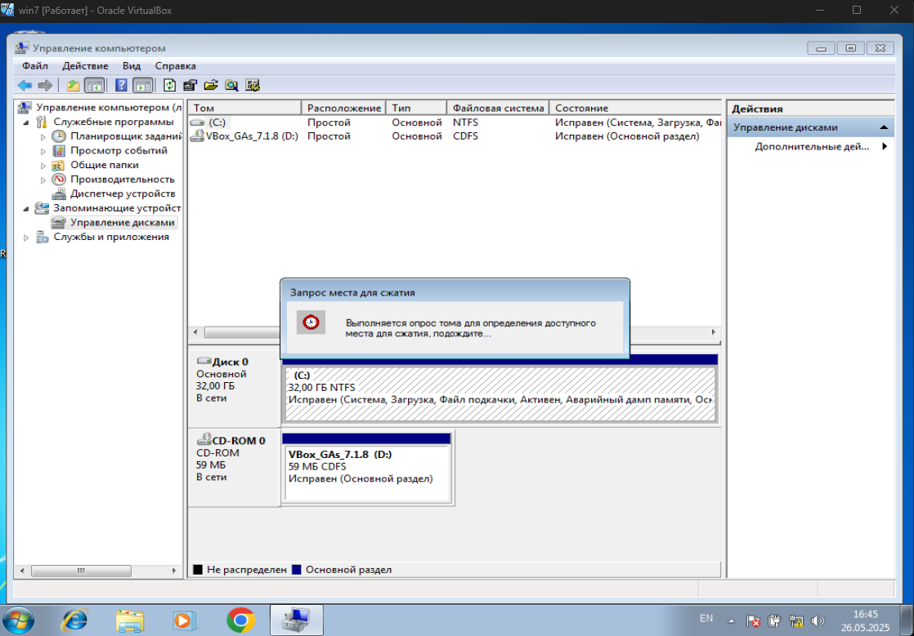
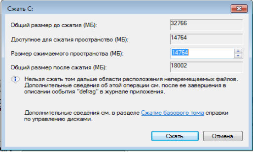
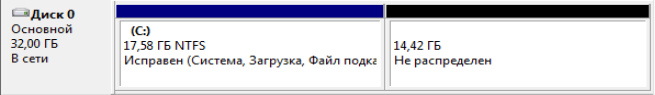
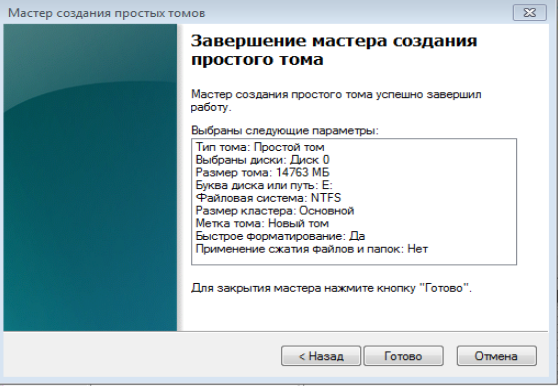

В рамках выполнения курсовой работы был использован накопитель объёмом 32 ГБ. Для организации логичного хранения данных и упрощения работы с файлами было принято решение выполнить разметку накопителя и создать дополнительный логический раздел.
Откроем управление дисками. Для того, чтобы разделить диск C, кликнем правой кнопкой мыши по соответствующему тому (по диску С) и выберем пункт «Сжать том».

Предложено сжать том на все доступное свободное пространство жесткого диска. Сделаем новый раздел объемом 15Гб. Он будет предназначен для хранения пользовательских документов, резервных копий, рабочих файлов и архивов, связанных с выполнением курсовой работы и экспериментами по системному программному обеспечению.

В управлении дисками появится новая нераспределенная область диска, а диск С уменьшится. Кликнем по области «не распределена» и выберем пункт «Создать простой том». Откроется мастер создания простых томов, где мы назначим букву для диска

